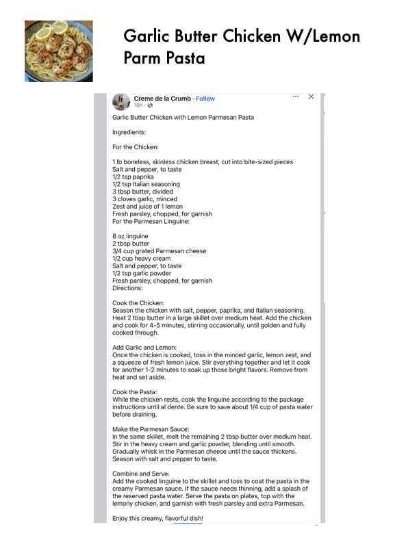

Garlic Butter Chicken W/Lemon

Original cookbook page 718
Ingredients
- For the Chicken:
- 1lb boneless, skinless chicken breast, cut into bite-sized pieces
- Salt and pepper, to taste
- 1/2 tsp paprika
- 1/2 tsp Italian seasoning
- 3 tbsp butter, divided
- 3 cloves garlic, minced
- Zest and juice of 1 lemon
- Fresh parsley, chopped, for garnish
- For the Parmesan Linguine:
- 8 oz linguine
- 2 tbsp butter
- 3/4 cup grated Parmesan cheese
- 1/2 cup heavy cream
- 1/2 tsp garlic powder
Instructions
- Cook the Chicken: Season the chicken with salt, pepper, paprika, and Italian seasoning. Heat 2 tbsp butter in a large skillet over medium heat. Add the chick and cook for 4-5 minutes, stirring occasionally, until golden and fully cooked through. Add Garlic and Lemon: Once the chicken is cooked, toss in the minced garlic, lemon zest, at a squeeze of fresh lemon juice. Stir everything together and let it coc for another 1-2 minutes to soak up those bright flavors. Remove fron heat and set aside. Cook the Pasta: While the chicken rests, cook the linguine according to the package before draining. Make the Parmesan Sauce: In the same skillet, melt the remaining 2 tbsp butter over medium he Stir in the heavy cream and garlic powder, blending until smooth. Gradually whisk in the Parmesan cheese until the sauce thickens. Season with salt and pepper to taste. Combine and Serve: Add the cooked linguine to the skillet and toss to coat the pasta in th creamy Parmesan sauce. If the sauce needs thinning, add a splash o the reserved pasta water. Serve the pasta on plates, top with the lemony chicken, and garnish with fresh parsley and extra Parmesan. Enjoy this creamy, flavorful dish!
Recipe #718 from collection